Commutator PRO
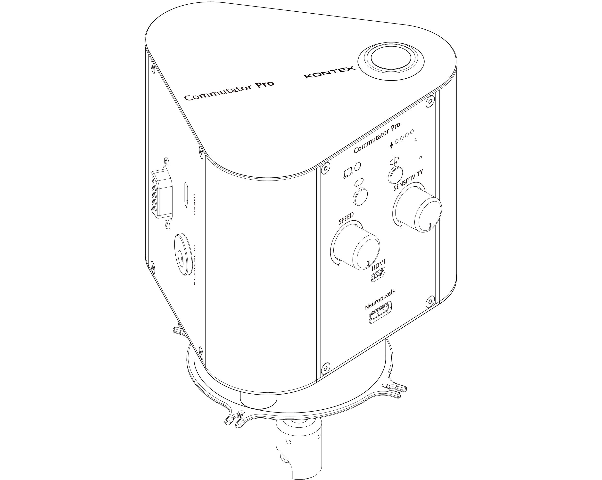
Overview
The Commutator Pro is a high-performance, motorized commutator designed to prevent tether tangling during neuroscience experiments, ensuring smooth and uninterrupted behavioral recordings. It can operate using external power or its integrated, rechargeable lithium battery, offering flexible deployment options. A built-in microprocessor, working in tandem with a rotary magnetic sensor and/ or an external gyroscopic sensor, actively manages cable orientation by automatically counteracting twists.
The system is highly configurable, supporting up to four Neuropixels ports alongside a conventional probe driven by either recording or stim-record headstages, and offers up to nine GPIO channels for user-defined applications. Its adaptable mounting and cable management system, complemented by an optional passthrough channel, enables seamless integration across a wide range of experimental setups—providing robust performance and maximum versatility.Key Features
① Dual sensor options
- Gyroscopic sensor
- Magnetic sensor
Ideal for seamless behavioral integration, especially in small animal setups. Can be easily adapted.
Integrated magnetic encoder detects rotation without external sensors. Recommended for rats and non-Neuropixels experiments.
② Neuropixels & passive probe support
- Supports up to 4 Neuropixels headstage ports. Each headstage supports either 1 Neuropixels 1.0 probe or 2 Neuropixels 2.0 probes.
- Supports simultaneous Neuropixels and passive probe (e.g. electrical stimulation) operation.
③ Integrated sensor cable
- Lightweight (< 1g) and highly flexible 34 AWG wire bundle.
- Compatible with all existing headstage setup.
④ Optional fluidic/fiber passthrough channel
- 5 mm inner diameter channel enables optical fiber or fluidic tubing access during ongoing experiments.
⑤ Low Operation acoustic noise
- 33-35dB. Measured at 30cm away using iPhone 16 Pro (Note: ambient is measured to be 32dB).
⑥ GPIO & PC control
- Up to 9 GPIO lines for custom application.
- Up to 9 GPIO lines for custom application.
- Left/right override via PC or hardware panel.
⑦ Intelligent Battery Management
- System power is supplied through the battery at all times. An onboard controller maintains the battery between 20% and 80% charge to help extend battery lifespan.
- For applications requiring maximum runtime, intelligent battery management can be disabled through the GUI UART Control App, allowing the battery to remain fully charged at 100% capacity.
Model Number
COMP- IH - XH1 - NP1 - PT - B
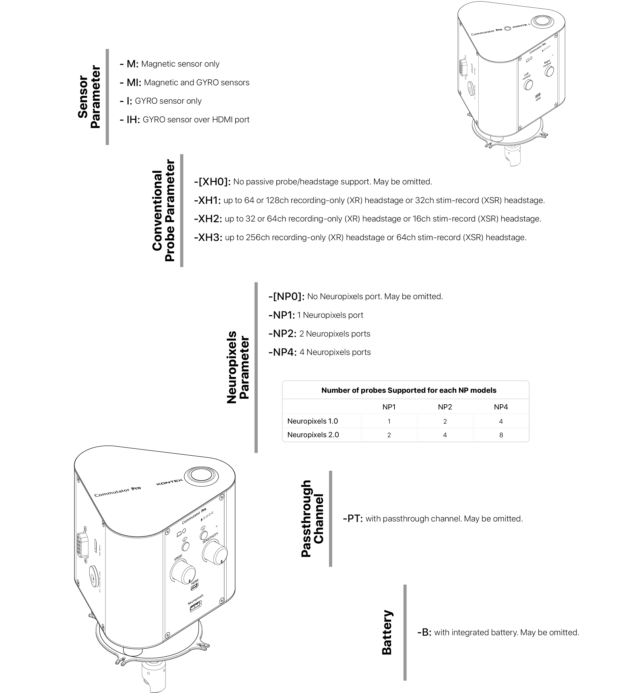
Not all combination is possible
Components
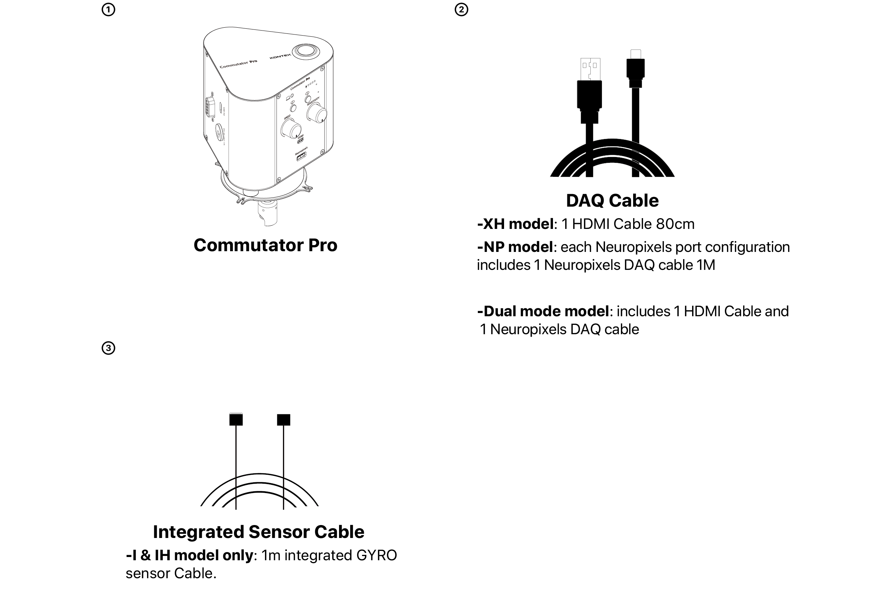
NOTE: See Tested Cable Configuration and Compatible Accessories for additional cable length options.
Required Customer Provided Parts
1. Compatible power source
USB Power Brick supplying 5V, 1A or AC Power Supply: 20V 1A ; 2.5mm jack (5525)
2. USB-C charging cable, if applicable
Dimension and Weight
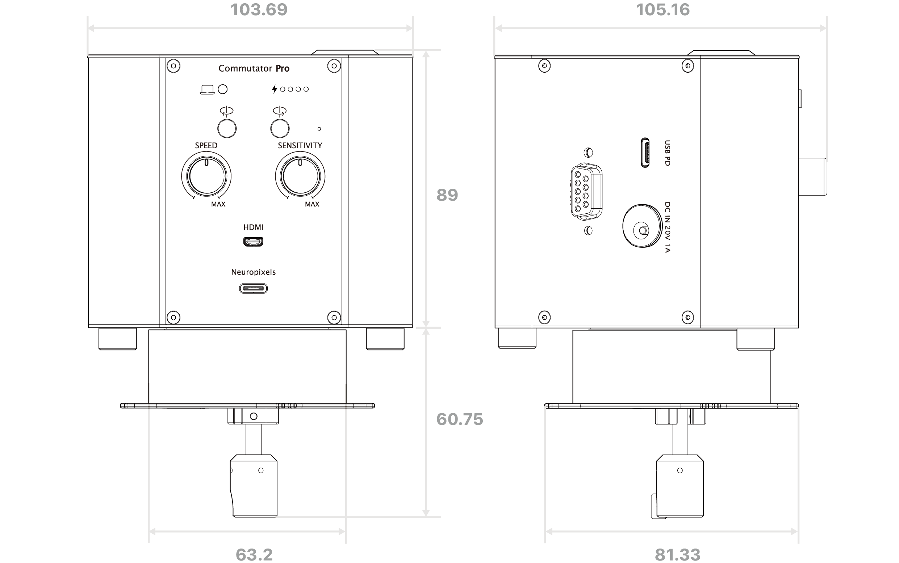
Weight ~825g
unit: mm
Device Overview
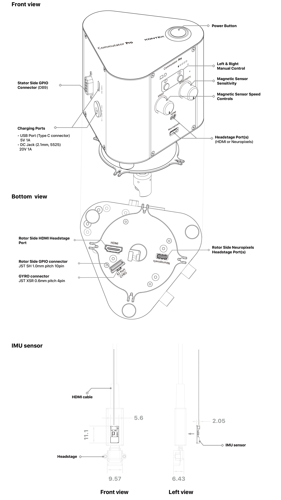
Weight ~0.18g
unit: mm
LED Indicators
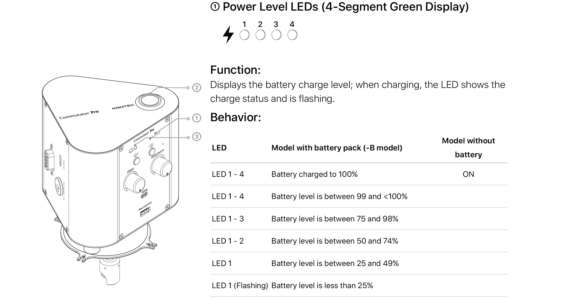
② Power indicator LED (White ring light)
Function: Indicates that adequate power is supplied to the commutator (the motor drive system) when the main ON-OFF toggle button is toggled to ON.Behavior:
- Solid white: The device is powered and functioning normally.
- Off: The commutator is powered off or not receiving sufficient input voltage.
③ PC connection status LED
Function: Indicates the status of USB-C communication with a host computer.Behavior:
- Solid light ON: The commutator is connected to a PC and has entered Remote Control Mode. In this mode, Sensitivity and Speed are governed by software settings displayed on the PC interface. Manual knob control on the front panel is overridden.
- Off: No active USB connection or operating in local manual mode (hardware knob control applies).
NOTE: The battery is a consumable component and is not covered under warranty. When it reaches the end of its lifespan—evidenced by rapid charging and immediate shutdown upon disconnecting external power—the device remains fully functional when powered externally. To replace the battery, please return the unit for servicing.
Installing the Commutator Pro
Option 1: Undermount
The Commutator Pro can be securely mounted to a behavior box with 3 set screws that are preattached to the commutator. (See undermount cutout installation sepcification)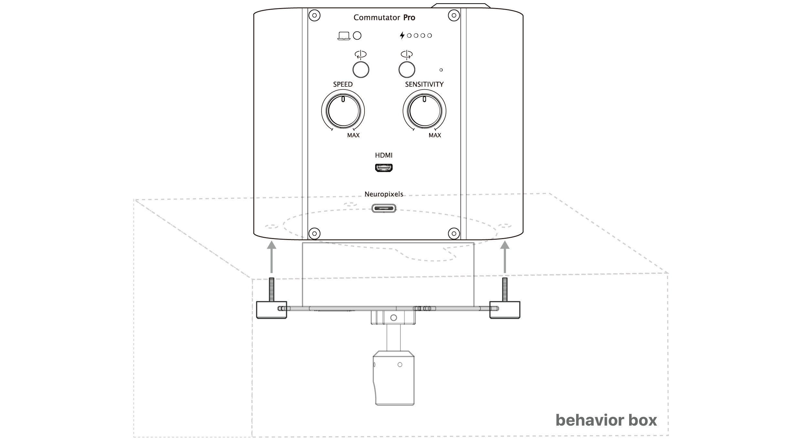
Option 2: Camera mount
The Commutator Pro includes a standard 1/4-inch mounting screw socket that is compatible with standard camera mounting accessories. Cost effective camera mounts with articulated arm can be used to easily suspend the Commutator Pro above the recording rig.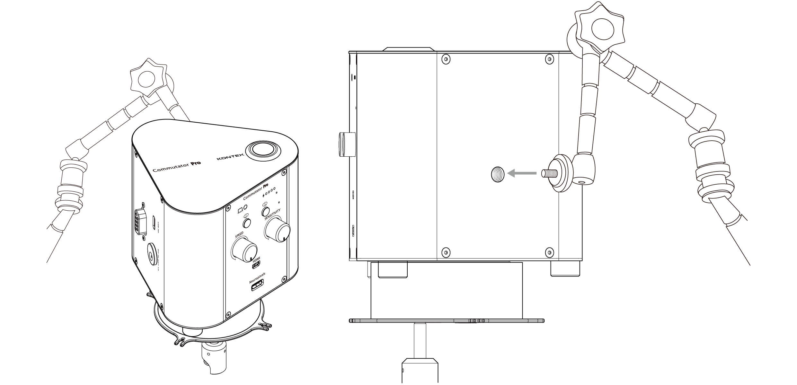
Commutator Pro installation diagram
⚠ IMPORTANT: Always ensure the Commutator is mounted level. Installing the Commutator Pro at an angle may lead to increased acoustic noise and accelerated mechanical wear.
Getting Started
Step 1: Powering the commutator
The Commutator Pro can be powered via either the USB-C port or the DC jack. When using the USB-C port—particularly during remote operation under PC control—ensure a stable 5V, 1A power supply, compliant with USB 3.0 or USB Power Delivery (USB-PD) specifications. Powering the device with only 5V, 0.5A (typical of USB 2.0) may result in unreliable performance, including failure to power on or disruptions in motion tracking.Battery charging
If your Commutator Pro is equipped with an internal battery (models designated with -B), the battery will begin charging automatically when power is connected. During charging, the front-panel battery level indicator LEDs will flash and illuminate progressively to reflect the current charge level, indicating active charging (see LED Indicators section for details).
Once fully charged, all four power LEDs will remain steadily illuminated. The Commutator Pro is equipped with an integrated Battery Management System (BMS) that prevents overcharging, making it safe to leave the device plugged in during operation.
A full charge takes approximately 7 hours, and under normal operating conditions, the device can run for up to 6-9 hours on a full charge.
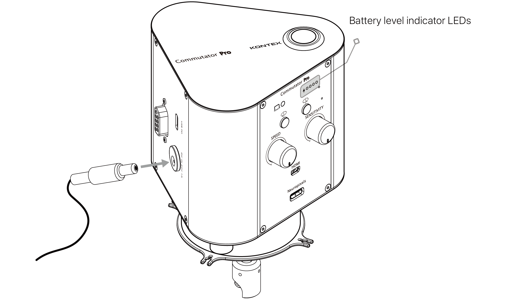
Step 2: Connecting to the XDAQ
Use the supplied DAQ cable to connect between a XDAQ headstage port and the appropriate headstage port (Neuropixels or HDMI) of the Commutator Pro.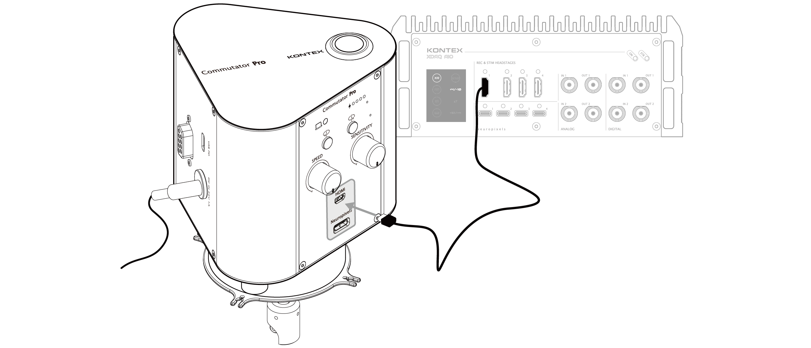
⚠ IMPORTANT: For Neuropixels, connect the black USB-C connector to the DAQ systems (XDAQ, PXIQBSC, OneBox) and the white connector to the Commutator Pro. Reversing the connector order will cause Neuropixels to be un-detectable.
Step 3: Connecting the headstage cable to the rotating interface
To connect the headstage cable to the Commutator Pro, locate the headstage port(s) positioned on the underside of the device, which serves as the rotating interface of the commutator.
Identify the appropriate port based on the headstage type (HDMI or Neuropixels) as labeled near each connector. Carefully align the headstage cable connector with the corresponding port and insert it straight and firmly until it is securely seated. These ports are designed to maintain a stable connection while allowing continuous rotation during operation.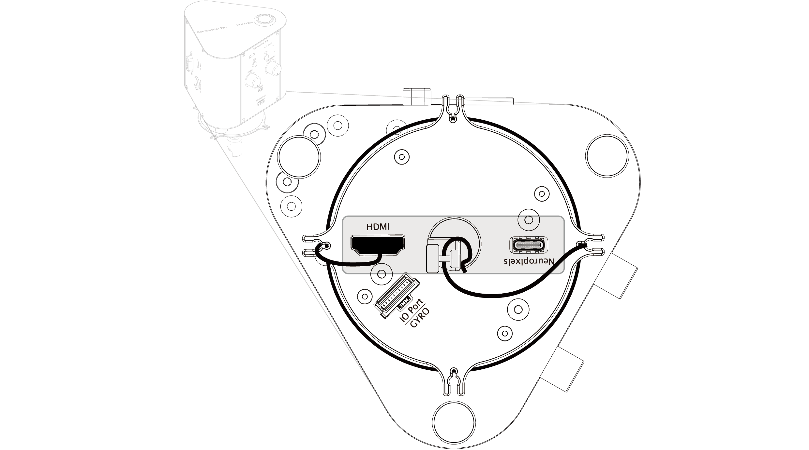
- Avoid twisting or pulling the cable during installation.
- It is recommended to power off the device before making connections to prevent hardware damage.
Once connected, signal input from the headstage will be routed through the commutator and transmitted to the corresponding output port on the top of the commutator base.
Step 4: Managing excess cable
When connecting the headstage cable to the Commutator Pro, the signal pathway begins at the rotating interface and exits through the fixed-side rotor side ports. After selecting the appropriate rotor side port (e.g., HDMI or Neuropixels), the user may route the cable toward the downstream recording amplifier.To ensure stable cable handling during rotation and prevent signal artifacts caused by tension or displacement, proper cable management is essential.
Route the cable as illustrated below and securely lock the cable using the integrated screw clips, ensuring that adequate slack is maintained to prevent tension on the headstage connection and to allow smooth rotation of the commutator.
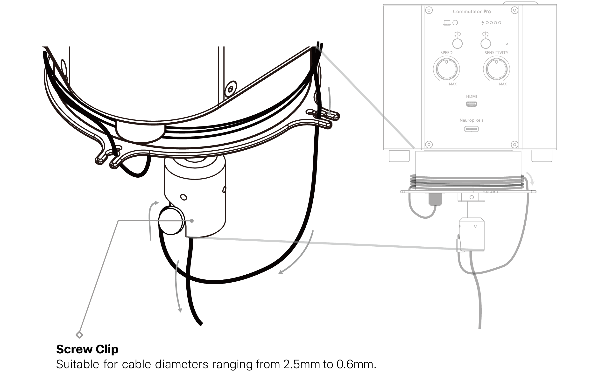
⚠ IMPORTANT: It is important to leave a small amount of slack in the cable to prevent tension that could affect the device's movement and sensitivity.
Step 5: Sensor configuration
The Commutator Pro can be driven using a compatible animal side IMU sensor or the integrated magnetic encoder. Note: the IMU sensor found in the X-Headstage or Intan stock recording headstages is not compatible with the Commutator Pro.IMU Sensor Models (designated with -I or -IH)
- -I Model: Connect the integrated IMU sensor cable to the GYRO port on the rotating interface.
- -IH Model: Disconnect the integrated IMU sensor cable from the GYRO port, if applicable. Connect a custom headstage that includes a compatible and integrated IMU sensor to the HDMI cable.
NOTE: If no compatible headstage is available, connect the integrated IMU sensor cable instead. The device will not function correctly if both custom GYRO headstage and integrated IMU sensor cable are connected.
Magnetic sensor model (designated with -M)
This configuration uses the integrated magnetic encoder located on the rotating interface to detect cable rotation. It eliminates the need for the external IMU sensor. No setup is necessary, proceed to the next step.Combined GYRO & magnetic sensor model (designated with -MI)
- To use IMU sensor as the primary input:
- -IH Model: Plug the integrated IMU sensor cable into the GYRO port on the rotating interface. When a valid GYRO signal is detected, the magnetic encoder input will be automatically ignored.
If your Commutator Pro supports both GYRO and magnetic Sensor:
To switch to Magnetic encoder sensor:
Disconnect the IMU sensor cable. Release the lock screw securing the cable encoder attached to the magnetic encoder.
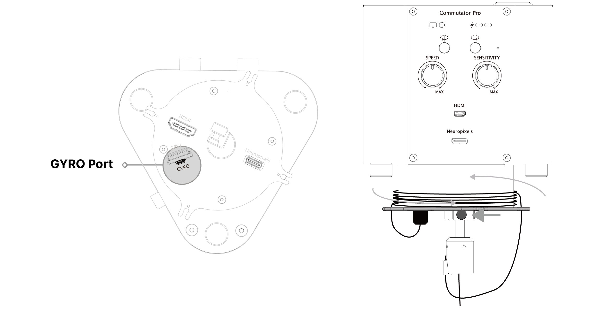
NOTE: When using the IMU sensor, ensure the lock screw is fastened to secure the cable encoder in place.
⚠ IMPORTANT: The IMU sensor must be connected to the Commutator PRO before powering on to ensure proper operation.
Step 6: Connecting GPIO
This interface allows users to transmit analog or digital signals from external equipments. The signal enters via the fixed-side GPIO DB9 port and is routed directly to the rotating-side port, enabling seamless integration with devices mounted on the animal.A pre-assembled cable for accessing the rotating-side GPIO is available for purchase from Digi-Key or Mouser. To locate compatible options, search for 'JST SH' connector (10-pin).
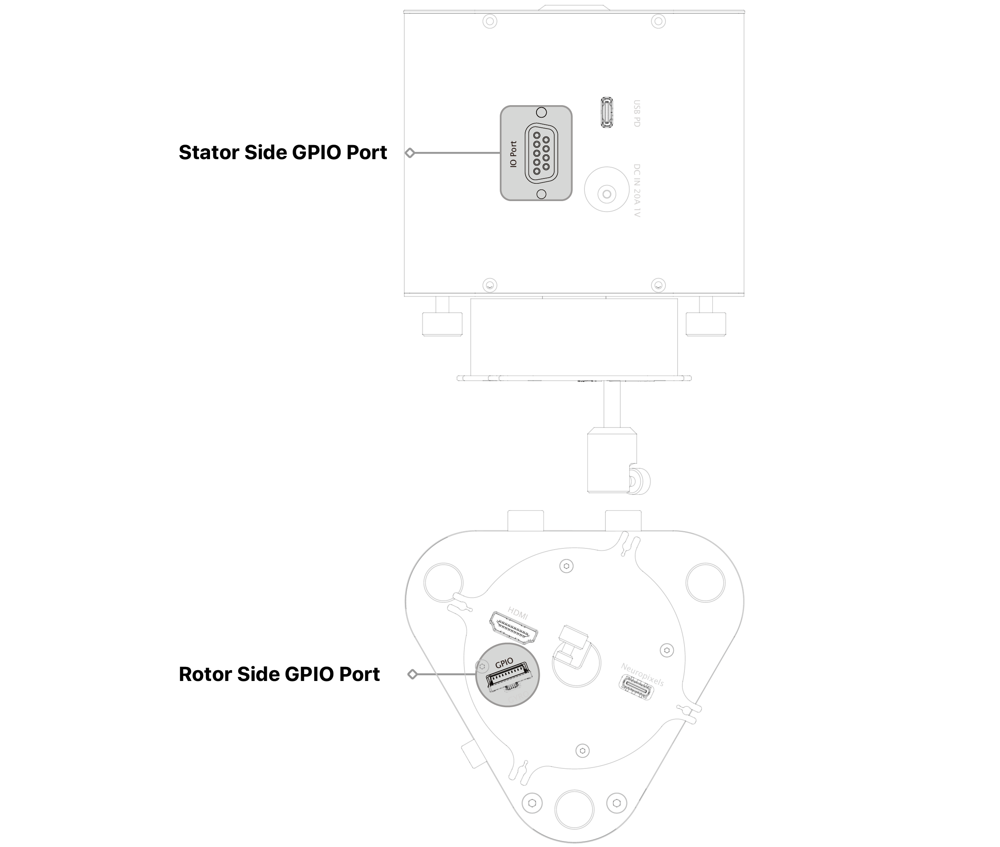
NOTE: GPIO signal can be routed through the HDMI port at the expense of reduction of maximum supported number of headstage channels. Contact us for the customization. Such customization should be done at the time of the order.
Step 7: Connecting to the headstage, setting up IMU sensor and turning on
Connect the headstage cable to the headstage
- Attach the IMU sensor to the headstage or the headstage cable using adhesive or other suitable methods.
- Ensure the sensor is perpendicular to the moving plane and parallel to the cable; do not rotate its orientation.
Attach IMU sensor to the headstage or cable
Power On
Press and hold the power button for one second. The LED indicator will flash three times to confirm the device has successfully powered on.
Press and hold the power button again for one second to power off the device.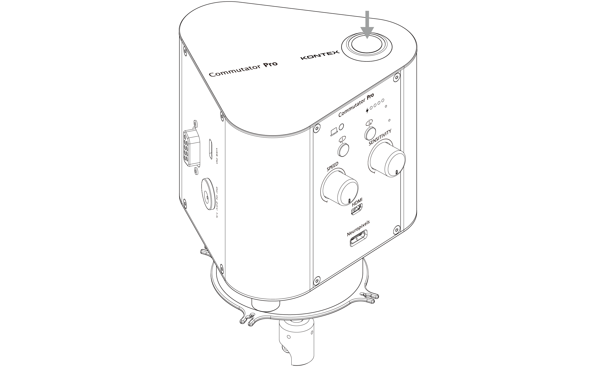
⚠ IMPORTANT: The IMU sensor must be connected to the Commutator PRO before powering on to ensure proper operation.
Magnetic Sensor Sensitivity & Speed Controls
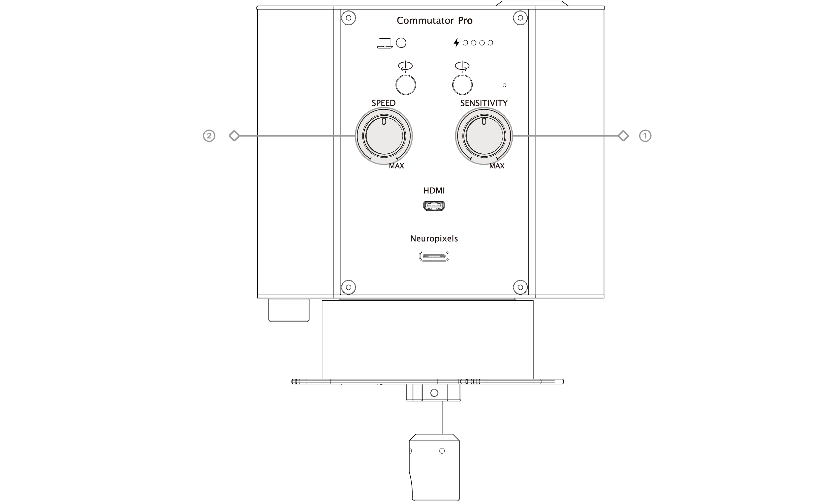
① Sensitivity knob
- Function:
Adjusts the magnetic sensor sensitivity (7 increments) of the Hall effect sensor.
- Small animals (e.g., mice) or low-activity experiments: Turn the sensitivity knob clockwise to increase responsiveness.
- Large animals or highly active behavior: Reduce sensitivity to avoid overcompensation and motor jitter.
Effect: Higher sensitivity increases the system’s responsiveness to small rotational movements of the tether, triggering sensor compensation with less motion input.
Usage scenario:
② Speed knob
- Function:
Controls the rotation amplitude and velocity (7 increments) of the compensating motor in response to detected movement.
- For rapid or vigorous animal movements, increase speed to prevent cable tension buildup.
- For delicate behaviors (e.g., head-fixed setups or fine-motor experiments), reduce speed for smoother operation.
Effect: Higher speed settings result in faster and larger motor responses, while lower settings make the compensation gentler and more gradual.
Usage scenario:
Using the Commutator PRO with Intan or Open Ephys Acquisition Systems
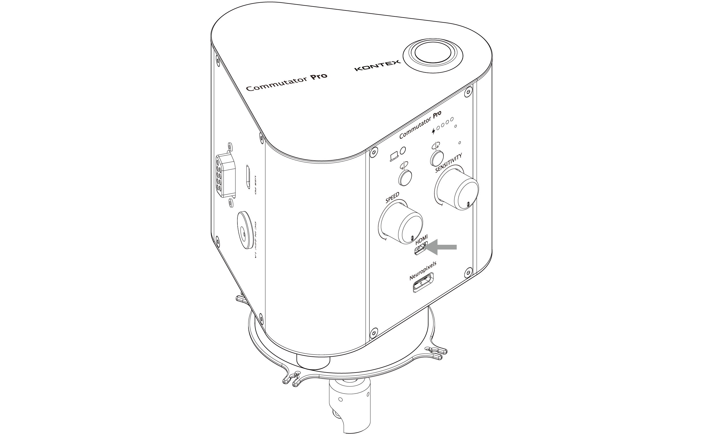
Perspective
uHDMI to RHD adapter
SKU: SAdpt-uHDMI-OM12
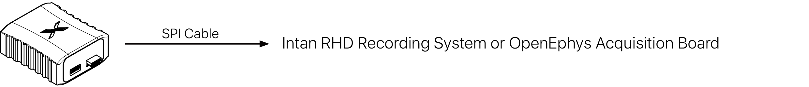
uHDMI to RHS Adapter
SKU: SAdpt-uHDMI-OM16
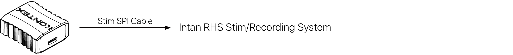
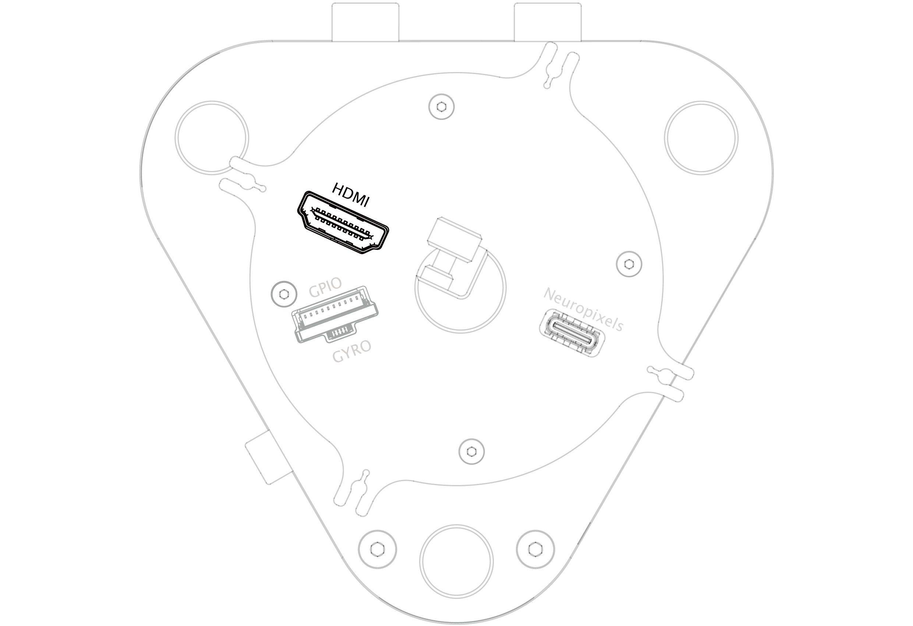
Bottom view
XDAQ to RHD headstage adapter
SKU: SAdpt-XDAQ-OM12
XDAQ to RHS headstage adapter
SKU: SAdpt-XDAQ-OM16
Left & Right Manual Control
-M or -MI model
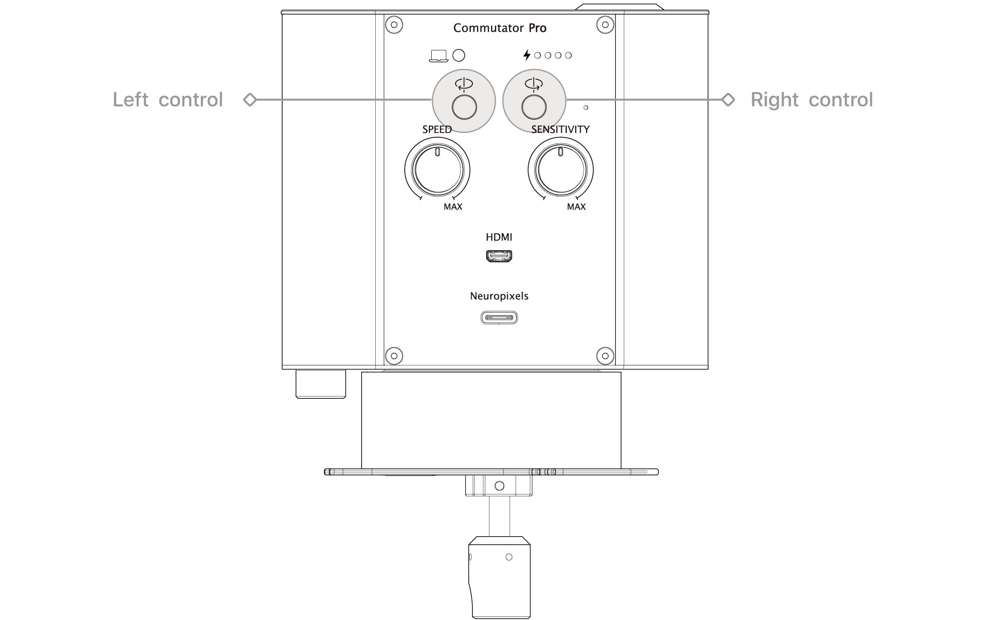
-I or -IH model
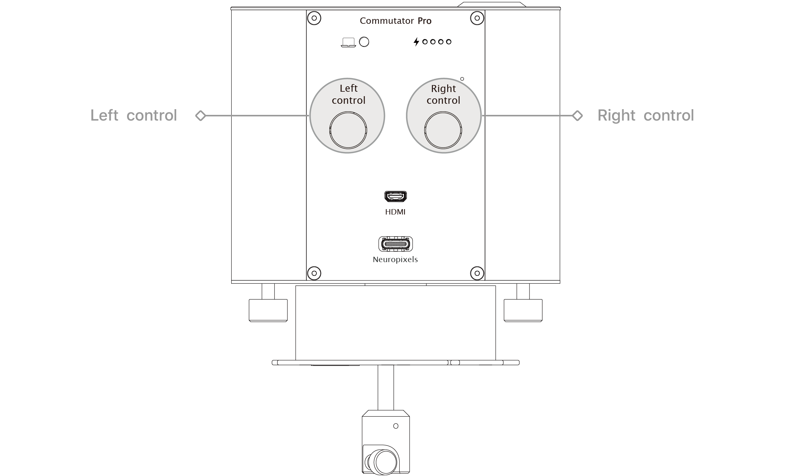
Modular Cable Fixation and Extension Components
This modularity applies differently depending on the commutator model :
- Except for Models with a Straight (COMP-IH-XH1-NP1-B) Extension rod is removable and can be replaced with different lengths. The lower cable fixation assembly is secured with M3 screws and can be swapped to accommodate various cable types and experimental needs.
- Passthrough Channel (-PT) Extension rod is fixed and cannot be replaced. The lower cable fixation assembly remains removable with M3 screws for flexible cable management.
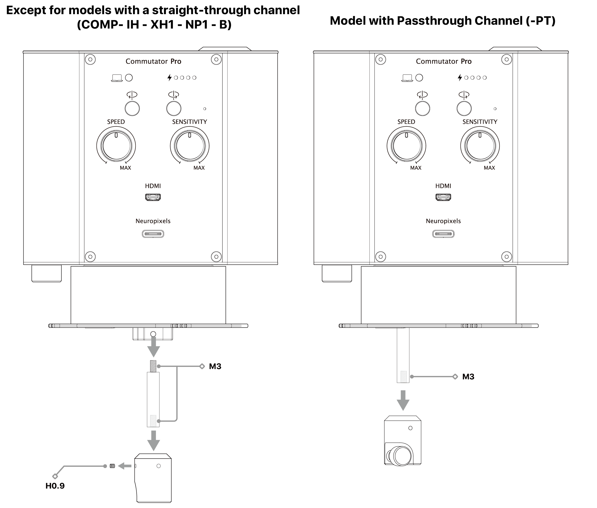
Tested Cable Configuration
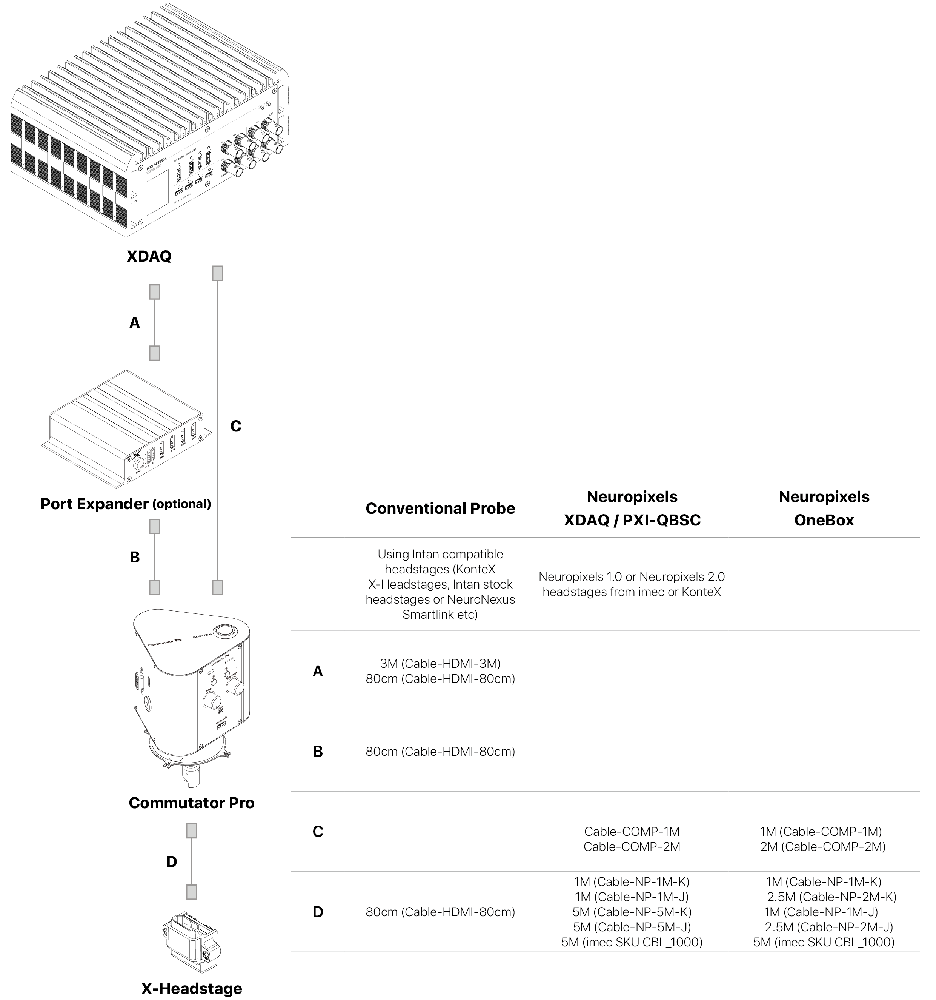
For custom cable length configurations, please contact us to discuss customization and validation options.
NOTE: To ensure optimal data transmission, minimize the total cable length between the DAQ, the commutator, and the animal. For custom cable length configurations, please contact us to discuss available options.
PC Interface
Configuration and control
|
|
|
|---|---|---|
| Machine Status | Status | Requests a status update from the Commutator for diagnostic and troubleshooting purposes. |
| Motor Speed Control | Speed 100, Speed 150, Speed 200, Speed 250 | Adjusts the motor rotation speed used during automatic or manual operation. |
| Motor Control Method | Method 1, Method 2 (Test) | Selects the motor control algorithm or sensor feedback method used for commutator operation. |
| Manual Control | PC Control, Turn Value Slider, Turn Value | Provides direct user control of motor rotation for testing, calibration, and troubleshooting purposes. |
| Enable/Disable USB Data Output | Enable USB Data, Disable USB Data | Enables or disables real-time data transmission through the USB interface for monitoring and external software integration. |
| Enable/Disable Intelligent Battery Management | Enable iBattery Management, Disable iBattery Management | Controls the battery charge management feature. When enabled, the battery is maintained between 20% and 80% charge to maximize battery lifespan. When disabled, the battery is allowed to charge to 100% capacity. |
| Track Threshold Setting | Tracking Threshold Slider, Tracking Threshold | Adjusts the IMU/Gyro tracking sensitivity used to trigger automatic motor compensation. Lower values increase responsiveness, while higher values require greater rotational movement before compensation is activated. |
| Max Motor Run Degree Setting | Motor Max Slider, Motor Max | Sets the maximum rotation angle allowed for each motor compensation event to prevent excessive movement. |
Battery charging behavior can also be configured through the GUI UART Control App, allowing users to switch between battery life optimization mode (20–80% charge range) and full-charge mode (100% charge).
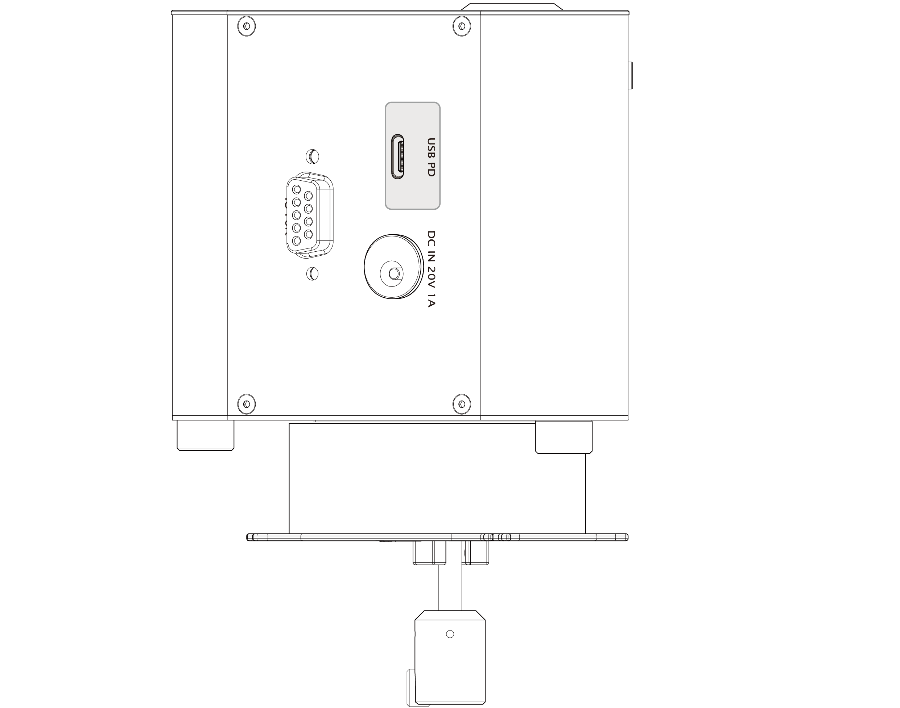
Charging ports
Firmware Interface and IMU Reference
This interface allows users to monitor device orientation, acceleration, and motor behavior during operation. It also enables configuration of operational parameters such as the Y-axis tilt threshold and telemetry output rate.
The IMU data reported by the firmware follows the coordinate system defined by the onboard Bosch BNO055 sensor.
• Communication Interface
| Parameter | Specification |
|---|---|
| Interface | USB UART (Virtual COM Port) |
| Data Format | JSON |
| Transmission Mode | Continuous streaming |
| Default Data Rate | 20 ms |
| Command Format | JSON |
Telemetry Data Output
The Commutator continuously outputs IMU and motor status data in JSON format.• Example Data Packet
• Telemetry Parameter Description
| Parameter | Description | Range |
|---|---|---|
| Firmware version | ||
| System time counter | ||
| IMU read failure count | ||
| Current Y-axis tilt threshold | ||
| Motor position | ||
| IMU orientation (X axis) | ||
| IMU orientation (Y axis) | ||
| IMU orientation (Z axis) | ||
| Acceleration (X axis) | ||
| Acceleration (Y axis) | ||
| Acceleration (Z axis) | ||
| Gravity vector (X axis) | ||
| Gravity vector (Y axis) | ||
| Gravity vector (Z axis) |
IMU Coordinate System
The onboard IMU follows the coordinate system defined by the Bosch BNO055 orientation sensor. All orientation, acceleration, and gravity values reported in the telemetry output correspond to this reference frame.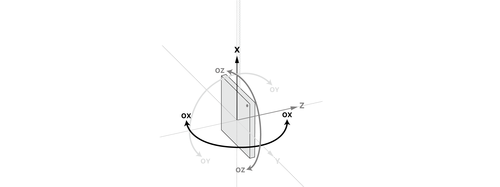
- The X-axis represents rotation along the device width direction.
- The Y-axis represents forward and backward tilt relative to the device.
- The Z-axis represents vertical rotation perpendicular to the device surface. These axes define the reference frame used for all IMU measurements.
Relationship Between IMU Data and Telemetry Parameters
The telemetry parameters correspond directly to the IMU axes described above.Orientation
- ox — rotation angle around the X-axis
- oy — rotation angle around the Y-axis
- oz — rotation angle around the Z-axis
Acceleration
- gx, gy, gz — gravity vector components along X, Y, Z axes
Motor Response Based on IMU Tilt
The Commutator uses the gravity component along the Y-axis (gy) to determine whether the motor should respond.During operation, the firmware continuously monitors the device tilt along the Y-axis. If the detected tilt exceeds the configured gy_range threshold, motor movement will be temporarily disabled.
This mechanism prevents unstable motor operation when the device is excessively tilted and helps maintain reliable cable management during freely moving experiments.
Command Interface
The firmware supports configuration commands sent through the USB UART interface using JSON format.Commands are applied immediately after they are received.
gy_range Configuration
The gy_range parameter defines the allowable tilt range along the Y-axis before motor movement is disabled.• Default Value
• Range
• Example command
Data Rate Configuration
The data rate parameter (dr) controls the telemetry output interval.• Default Value
• Range
• Example command
NOTE : • Commands must be sent as valid JSON strings.
• Only one parameter should be modified per command.
• The gy_range parameter is persistent, while the data rate resets after power cycling.
• Telemetry output continues during configuration commands.
System Verification and IMU Status Monitoring
1. Software Installation and Acquisition
To facilitate communication with the Commutator Pro, users are required to utilize the CoolTerm serial terminal utility as the primary interface for system configuration and monitoring.- Official Download Link: Users can access the software at https://freeware.the-meiers.org/.
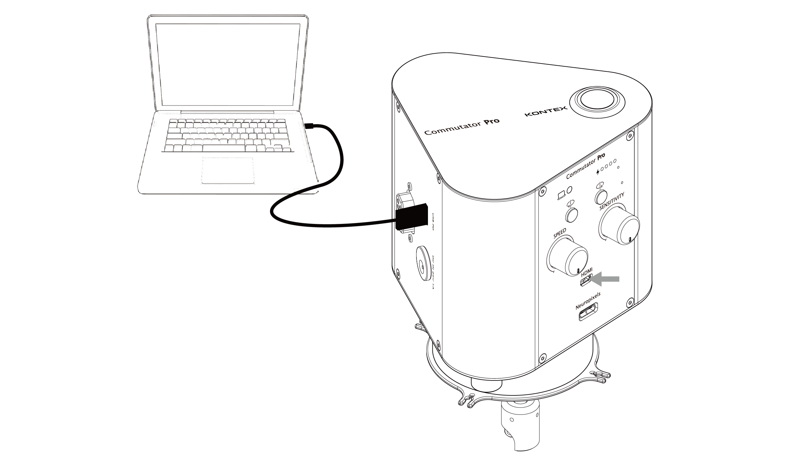
2. Connection Procedures
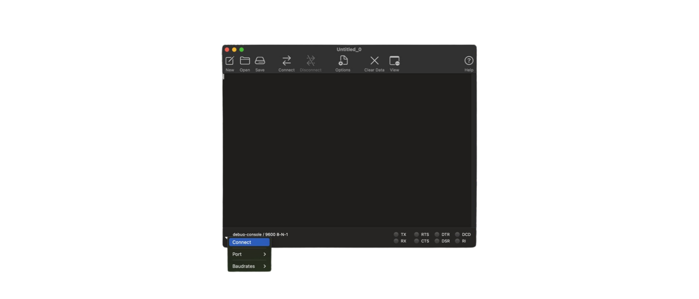
- Physical Setup: Connect the Commutator Pro to your PC via USB and power on the device.
- CoolTerm Configuration:
1. Open CoolTerm.
2. Click on the Connection menu at the bottom left (as shown in the reference image) or the Options icon in the top toolbar.
3. Ensure the settings are: Baudrate: 115200, Data Bits: 8, Parity: None, and Stop Bits: 1.
4. Click Connect.
3. Interpreting the Startup Sequence
A. Normal Operational Status (Success)
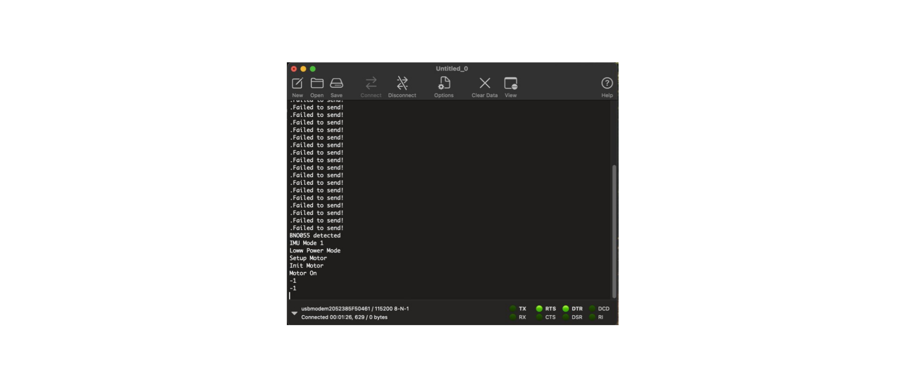
- 1. Sensor Detection: The string BNO055 detected appears.
2. System Setup: The log will show IMU Mode 1, Low Power Mode, and the motor initialization (Setup Motor, Init Motor, Motor On).
3.Data Streaming: Numerical values will begin to scroll, indicating real-time orientation tracking is active.
NOTE: It is normal to see several .Failed to send! messages at the very top of the log during the initial handshake. These can be ignored once the BNO055 detected message appears.
B. IMU Disconnected Status (Error)
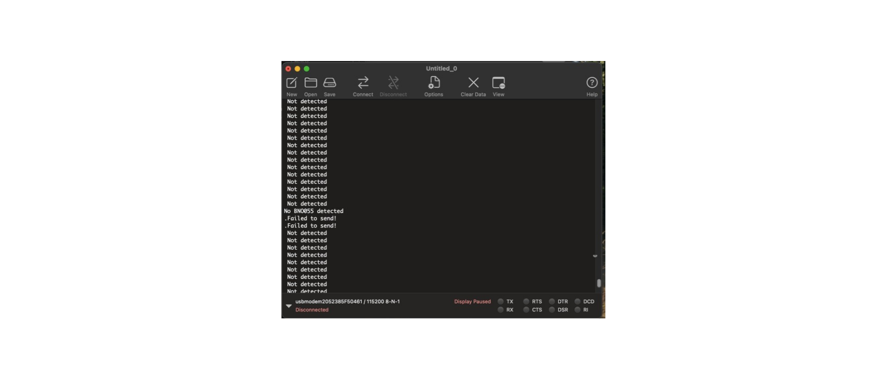
- Error Message: The screen will fill with Not detected and No BNO055 detected.
- System Stall:You will see .Failed to send! repeated, and the motor initialization sequence will not start.
4. Troubleshooting the IMU Link
- 1. Physical Inspection: Ensure the internal sensor or external interface cables are securely connected and haven't been dislodged during setup.
2. Reset Connection: Click Disconnect in CoolTerm and then Connect again to refresh the communication buffer.
Undermount Cutout Installation Sepcification
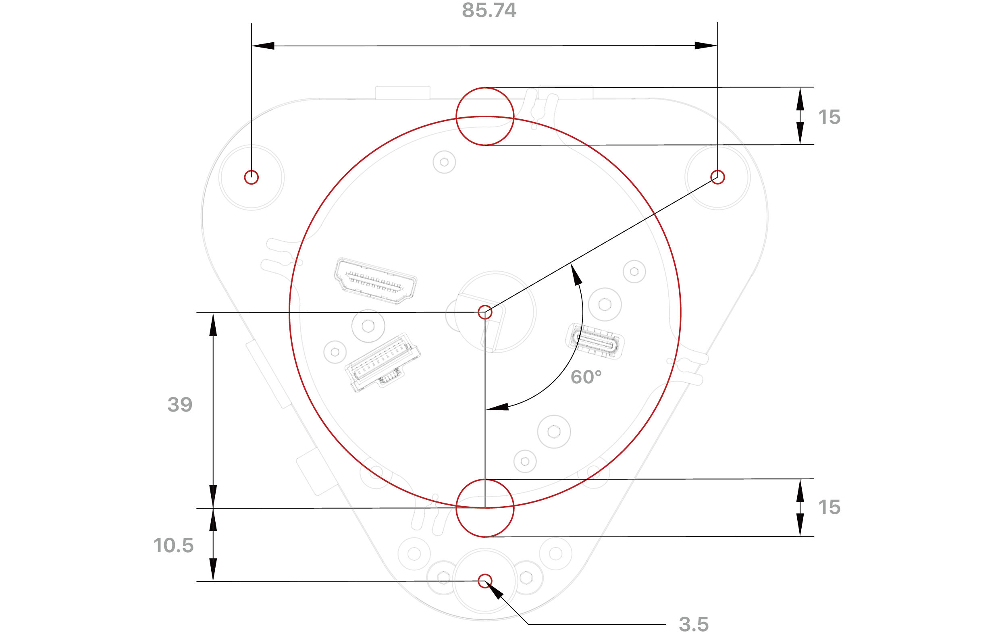
Cutout dimensions diagram
unit: mm
Pin Map
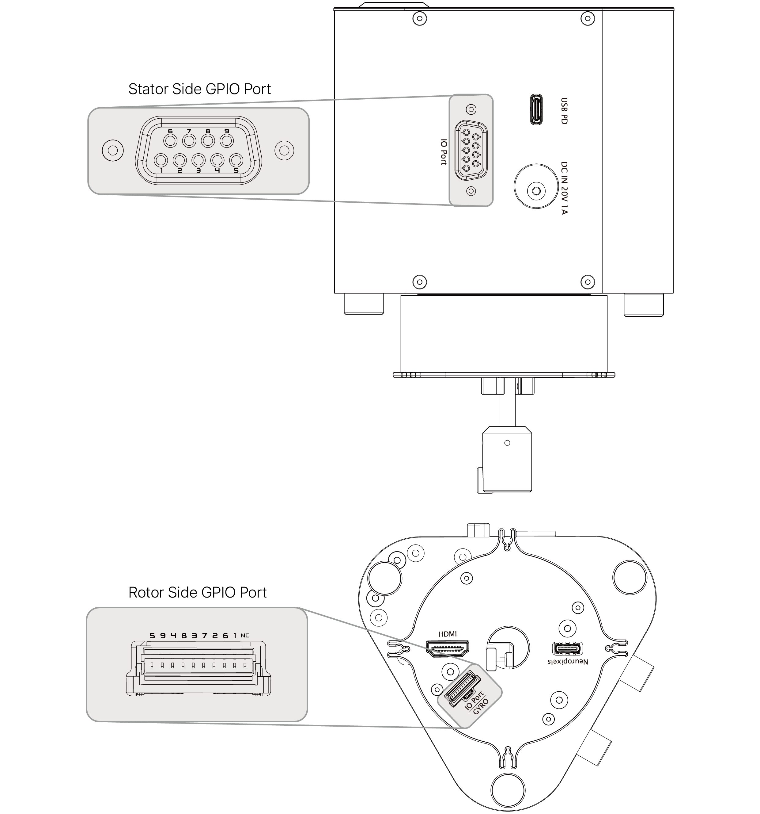
Example, if the Commutator has 3 GPIO, then pin 5, 9 and 4 are available.
Compatible Accessories
Headstage |
|
| HS-NP1 | KonteX Neuropixels 1.0 headstage with JST connector |
| HS-NP2 | KonteX Neuropixels 2.0 headstage with JST connector |
| X-Headstages | All X-Headstages except X3SR64 (contact us to discuss X3SR64 option) |
DAQ Cable |
|
| Cable-COMP-1M | Neuropixels DAQ cable (connecting system to the commutator) 1 M (included for NP model) |
| Cable-COMP-2M | Neuropixels DAQ cable (connecting system to the commutator) 2M |
| Cable-COMP-Cust | Contact us for custom length option for Neuropixels DAQ cable |
| Cable-HDMl-80cm | X-Headstage DAQ cable 80cm (included for XH model) |
| Cable-HDMI-3M | X-Headstage DAQ cable 3M |
Headstage Cable |
|
| Cable-NP-1M-J | KonteX Neuropixels 34AWG cable 1 M with JST connector for KonteX headstages |
| Cable-NP-2.5M-J | KonteX Neuropixels 34AWG cable 2.5M with JST connector for KonteX headstages |
| Cable-NP-5M-J | KonteX Neuropixels 34AWG cable 5M with JST connector for KonteX headstages |
| Cable-NP-1M-K | KonteX Neuropixels 34AWG cable 1 M with JST connector and Omnetics adapter bundle for IMEC headstage |
| Cable-NP-2.5 M-K | KonteX Neuropixels 34AWG cable 2.5 M with JST connector and Omnetics adapter bundle for IMEC headstage |
| Cable-NP-5M-K | KonteX Neuropixels 34AWG cable 5 M with JST connector and Omnetics adapter bundle for IMEC headstage |
| Cable-HDMl-80cm | 80cm HDMI cable for X-Headstages |
IMU Cable |
|
| Cable-lMU-1M | KonteX Neuropixels 34AWG cable 1 M with JST connector for KonteX headstages |
| Cable-lMU-2.5M | KonteX Neuropixels 34AWG cable 2.5M with JST connector for KonteX headstages |
| Cable-lMU-5M | KonteX Neuropixels 34AWG cable 5M with JST connector for KonteX headstages |
IMU sensor |
|
| HS-IMU | Replacement IMU sensor module (included for -I model) |
Adapter |
|
| Adpt-NP-J2OM | JST to Omnetics adapter for interfacing IMEC headstages with -J cables |
| SAdpt-XDAQ-OM12 | Animal side commutator adapter for lntan RHD headstage and SPI cable |
| SAdpt-XDAQ-OM16 | Animal side commutator adapter for lntan RHS headstage and SPI cable |
| SAdpt-uHDMI-OM12 | System side commutator adapter for lntan RHD controller |
| SAdpt-uHDMI-OM16 | System side commutator adapter for lntan RHS controller |
Model with Passthrough Channel (-PT)
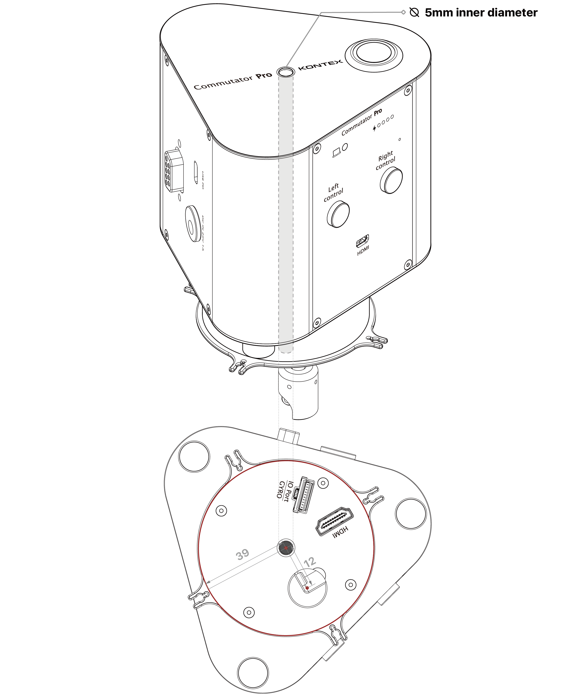